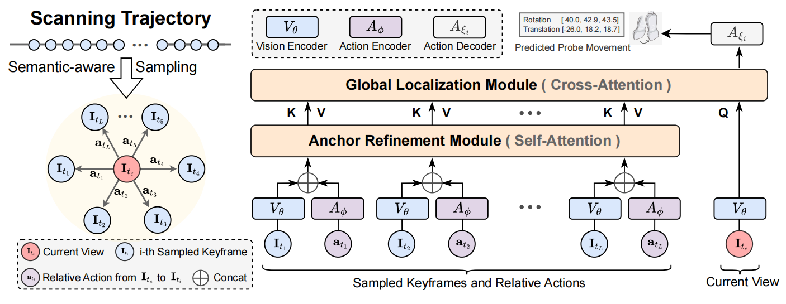
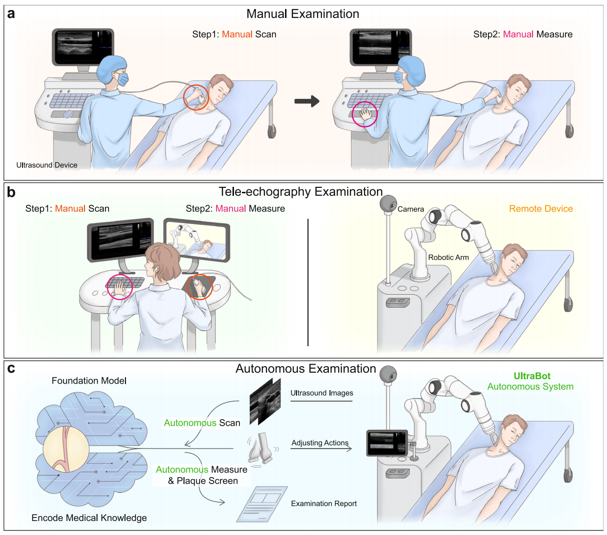
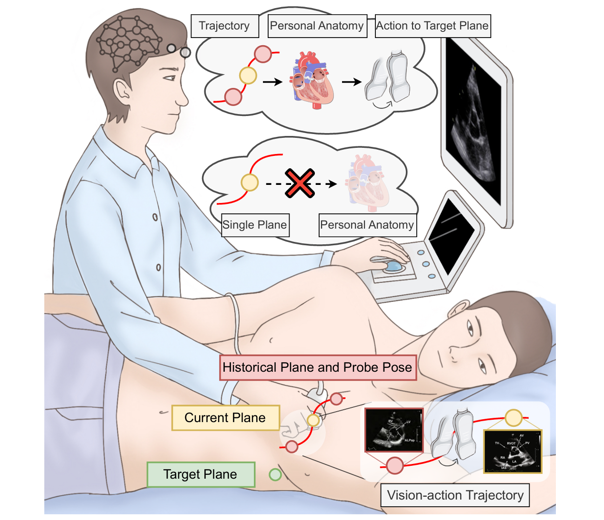
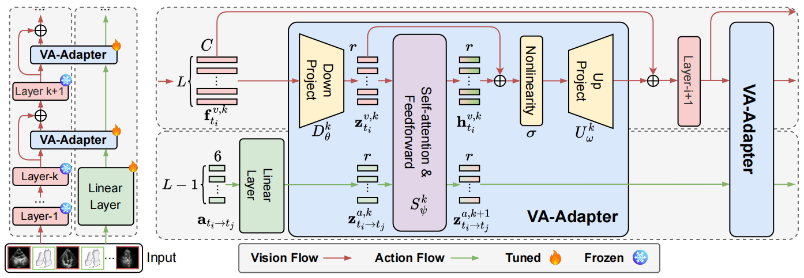
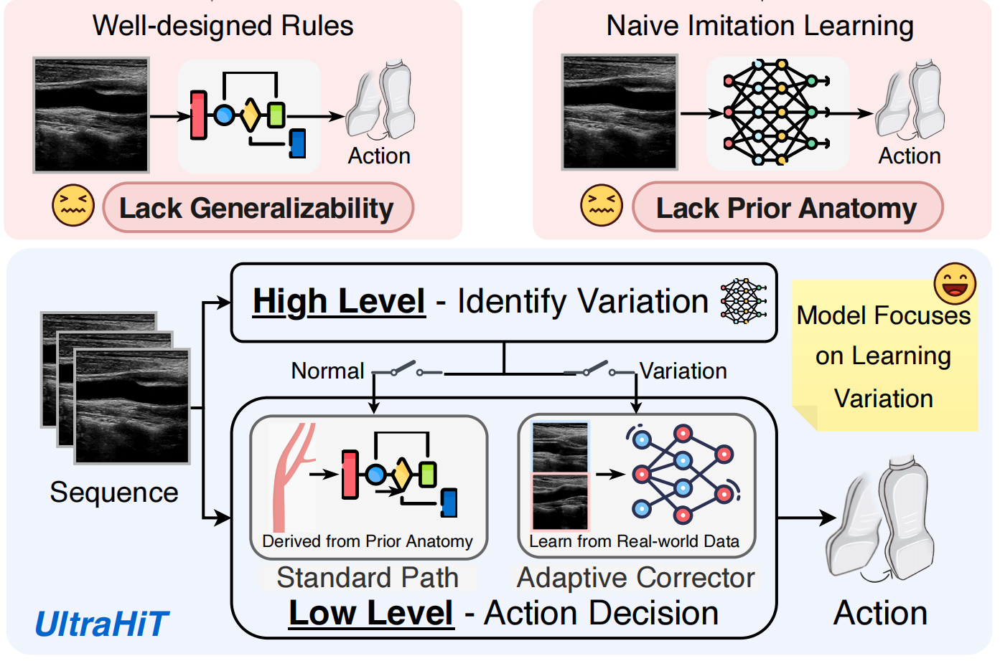
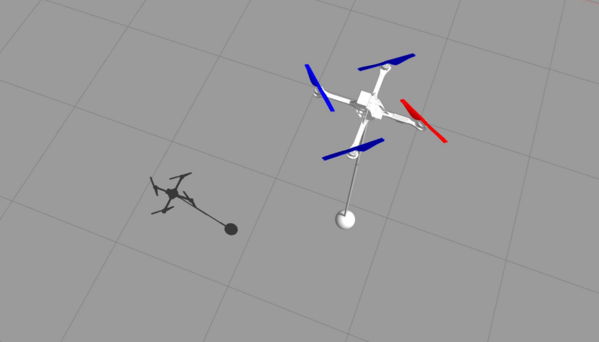
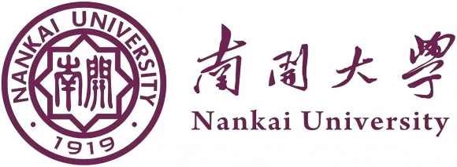

Teng WangPh.D. Student
Department of Automation, Tsinghua University |

Biography
I am a first-year Ph.D. student in the Department of Automation at Tsinghua University, supervised by Prof. Gao Huang at LeapLab. I work with lab members Haojun Jiang, Chenxi Li, and Diwen Wang.
My research interests include Embodied AI, Medical Robotics, and Robotic Ultrasound. Before that, I obtained my B.Eng. degree from Nankai University.
News
- [05/2026] Won the Best Poster Award (1st/480) at YAC 2026.
- [05/2026] One paper was early accepted by MICCAI 2026 (Top 9%).
- [01/2026] One paper was accepted by ICRA 2026.
Publications
* indicates equal contribution.
| Preprint | |
|
 |
UltraStar: Semantic-Aware Star Graph Modeling for Echocardiography Navigation Teng Wang*, Haojun Jiang*, Chenxi Li, Diwen Wang, Yihang Tang, Zhenguo Sun, Yujiao Deng, Shiji Song, Gao Huang Preprint [paper] |
| Journal Papers | |
|
 |
Towards expert-level autonomous carotid ultrasonography with large-scale learning-based robotic system Haojun Jiang*, Andrew Zhao*, Qian Yang*, Xiangjie Yan, Teng Wang, Yulin Wang, Ning Jia, Jiangshan Wang, Guokun Wu, Yang Yue, Shaqi Luo, Huanqian Wang, Ling Ren, Siming Chen, Pan Liu, Guocai Yao, Wenming Yang, Shiji Song, Xiang Li, Kunlun He, Gao Huang Nature Communications 2025 (IF = 17.2) This work was highlighted by the Chief Editor of Nature Biomedical Engineering in the October issue—the ONLY one of four featured studies to be highlighted by the editor-in-chief, alongside a Science and two Nature Medicine articles. |
|
 |
UltraSeP: Sequence-aware Pre-training for Echocardiography Probe Movement Guidance Haojun Jiang, Teng Wang, Zhenguo Sun, Yulin Wang, Yang Yue, Yu Sun, Ning Jia, Meng Li, Shaqi Luo, Shiji Song, Gao Huang Pattern Recognition 2026 (IF = 7.6) [paper] |
| Conference Papers | |
|
 |
VA-Adapter: Adapting Ultrasound Foundation Model to Echocardiography Probe Guidance Teng Wang*, Haojun Jiang*, Yuxuan Wang, Zhenguo Sun, Shiji Song, Gao Huang MICCAI 2026 Early Accept (Top 9%) This work was presented at YAC 2026 and won the Best Poster Award (1st/480). |
|
 |
UltraHiT: A Hierarchical Transformer Architecture for Generalizable Internal Carotid Artery Robotic Ultrasonography Teng Wang*, Haojun Jiang*, Yuxuan Wang*, Zhenguo Sun, Xiangjie Yan, Xiang Li, Gao Huang ICRA 2026 [paper] [project page] [code] |
|
 |
Deep Reinforcement Learning-Based Swing Suppression Control for Unmanned Multirotor Transportation System Teng Wang*, Shunxuan Wang*, Yi Chai, Xiao Liang ICMA 2024 Oral |
Awards
- 2026 Youth Academic Annual Conference of Chinese Association of Automation (YAC) Best Poster Award (1st/480)
- National Scholarship (Highest scholarship given by the government of China)
- Outstanding Bachelor's Degree Graduates at Nankai University
- Xing-Shen Chen Scholarship at Nankai University
- Gold Award, 9th China International Internet+ Innovation and Entrepreneurship Competition
- National Second Prize, National Undergraduate Electronic Design Contest (TI Cup), 2023
- First Prize, 9th North China Five-Province Undergraduate Robotics Competition (Finals)
- First Prize, 14th National Undergraduate Mathematics Competition
Education
|
Tsinghua University Ph.D. Student, Department of Automation Advisor: Gao Huang Sep. 2025 - Future |
|
|
 |
Nankai University Bachelor, School of Artificial Intelligence Sep. 2021 - Jun. 2025 Overall rank: 1/132 |
Visitors
© Teng Wang